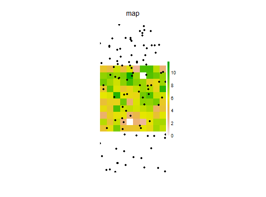
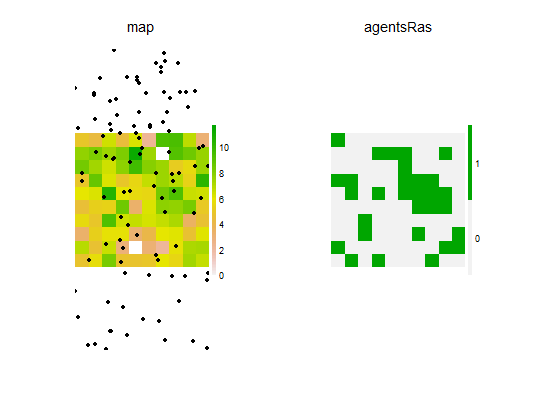

Sets the the number of agents to initiate. THIS IS NOT FULLY IMPLEMENTED.
A SELES-like function to maintain conceptual backwards compatibility
with that simulation tool. This is intended to ease transitions from
SELES.
You must know how to use SELES for these to be useful.
initiateAgents(map, numAgents, probInit, asSpatialPoints = TRUE, indices) # S4 method for Raster,missing,missing,ANY,missing initiateAgents(map, numAgents, probInit, asSpatialPoints) # S4 method for Raster,missing,Raster,ANY,missing initiateAgents(map, probInit, asSpatialPoints) # S4 method for Raster,numeric,missing,ANY,missing initiateAgents(map, numAgents, probInit, asSpatialPoints = TRUE, indices) # S4 method for Raster,numeric,Raster,ANY,missing initiateAgents(map, numAgents, probInit, asSpatialPoints) # S4 method for Raster,missing,missing,ANY,numeric initiateAgents(map, numAgents, probInit, asSpatialPoints = TRUE, indices)
RasterLayer with extent and resolution of desired return object
numeric resulting from a call to numAgents
a Raster resulting from a probInit call
logical. Should returned object be RasterLayer
or SpatialPointsDataFrame (default)
numeric. Indices of where agents should start
A SpatialPointsDataFrame, with each row representing an individual agent
library(magrittr)#> #>#> #> #>library(raster) library(quickPlot) map <- raster(xmn = 0, xmx = 10, ymn = 0, ymx = 10, val = 0, res = 1) map <- gaussMap(map, scale = 1, var = 4, speedup = 1) pr <- probInit(map, p = (map/maxValue(map))^2) agents <- initiateAgents(map, 100, pr) if (interactive()) { clearPlot() Plot(map) Plot(agents, addTo = "map") }# Note, can also produce a Raster representing agents, # then the number of points produced can't be more than # the number of pixels: agentsRas <- initiateAgents(map, 30, pr, asSpatialPoints = FALSE) if (interactive()) Plot(agentsRas)if (requireNamespace("dplyr")) { # Check that the agents are more often at the higher probability areas based on pr out <- data.frame(stats::na.omit(crosstab(agentsRas, map)), table(round(map[]))) %>% dplyr::mutate(selectionRatio = Freq/Freq.1) %>% dplyr::select(-Var1, -Var1.1) %>% dplyr::rename(Present = Freq, Avail = Freq.1, Type = Var2) out }#>#> Type Present Avail selectionRatio #> 1 0 1 1 1.00000000 #> 2 0 0 2 0.00000000 #> 3 2 2 6 0.33333333 #> 4 2 0 3 0.00000000 #> 5 3 6 17 0.35294118 #> 6 3 0 23 0.00000000 #> 7 4 3 16 0.18750000 #> 8 4 0 17 0.00000000 #> 9 5 14 8 1.75000000 #> 10 5 3 4 0.75000000 #> 11 6 15 1 15.00000000 #> 12 6 8 2 4.00000000 #> 13 7 10 1 10.00000000 #> 14 7 6 2 3.00000000 #> 15 8 10 6 1.66666667 #> 16 8 7 3 2.33333333 #> 17 9 4 17 0.23529412 #> 18 9 4 23 0.17391304 #> 19 10 3 16 0.18750000 #> 20 10 1 17 0.05882353 #> 21 11 1 8 0.12500000 #> 22 11 0 4 0.00000000 #> 23 12 1 1 1.00000000 #> 24 12 1 2 0.50000000